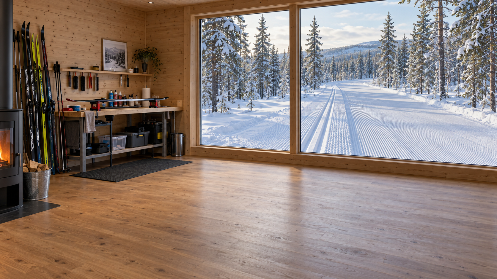
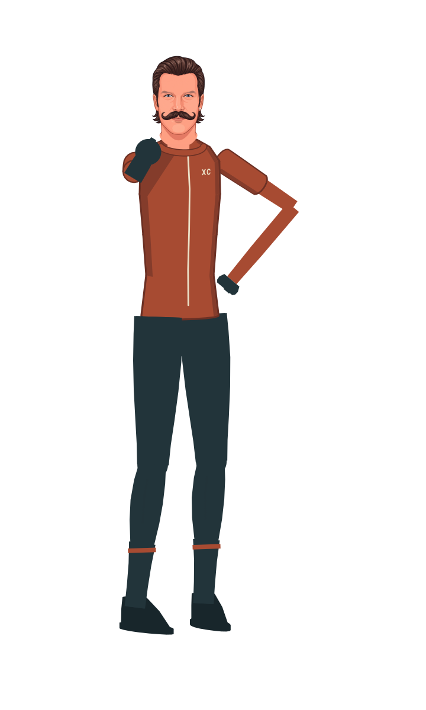

Find your balance.
Then learn the rhythm.
The Glide Labs course teaches body position, timing, then power. Start with the part that is breaking down, and use video to check the movement. [7]


Glide Learning Progression
The Glide Labs course starts each technique with body position, then teaches timing, then power. Start with the part that is breaking down. Adding force to mistimed movement usually makes the error harder to see.[7]
Body position
Find balance over the gliding ski. Check ankle and knee flexion and the position of your hips. Use easy terrain where you can repeat the movement.
Timing
Learn where the pole plant belongs relative to the ski push. Use the technique-specific rhythm below, then watch a short video of yourself.
Power
Add force after position and timing hold together. If the movement falls apart, return to the previous step.
Choose one skill, use its drill near the beginning of the workout, and compare a short recording with the lesson. The original course calls for repetition and feedback from yourself, video, or a coach.[7]
Technique Is Fitness
This is the chapter that separates skiers who train hard from skiers who get faster. Everything before it built the engine; this one teaches the engine to stop wasting itself.
Start with the humbling research: when scientists measure economy — how much oxygen a skier burns to hold a given speed — recreational skiers are 8 to 12 percent less efficient than elite juniors[1]. That gap is not fitness. It is technique, and it is worth more than any interval block a busy skier has time for, because it pays out on every single stride for the rest of your skiing life.
The foundation under all of it is stance. Most endurance athletes arrive at skiing as, in one coach's phrase, a big motor on lousy suspension — strong engines with poor balance and coordination[2]. You cannot pole powerfully off a platform you can't balance on. Before gears and intervals, the work is standing on one gliding ski without fighting for it.
Classic Gears
Classic skiing has three gears, and skiing well means shifting between them the way you'd shift a bike — matching the gear to the terrain instead of grinding one everywhere.
Diagonal stride is the climbing gear: opposite arm and leg, a committed press onto the kick wax to make it grip, a real weight transfer onto a gliding ski. It's the gear beginners think classic skiing is, and the one they do worst, because they shuffle instead of committing to one ski at a time.
Kick double-pole is the rolling-terrain gear: one leg kick followed by a double-pole push, efficient on gradual rises where full striding is too slow and pure double-pole is too hard.
Double-pole is the speed gear: no kick at all, both poles driving through the trunk. Over the last two decades it has taken over long-distance racing so completely that the governing body wrote rules to protect classic striding from disappearing entirely[3]. On Marcialonga's gentle valley, the fast skiers double-pole almost the whole 70 km.
Double-pole deserves special attention because newcomers underestimate it as arm work. It isn't. Biomechanically it's a whole-body movement — trunk, hip, knee, and ankle all contributing to drive the poles, with the best skiers generating more pole force through smaller, faster joint angles in a shorter push[4]. The legs matter so much that restricting knee and ankle motion measurably degrades a skilled double-pole[5]. When you double-pole, you are not doing an ab crunch with poles; you are falling onto the poles with your whole body and catching yourself with your core.
Diagonal stride
Climbing gear. Opposite arm/leg, commit weight fully onto one gliding ski, press down to make the wax grip. The test: can you glide on the kicking ski, or are you shuffling?
Kick double-pole
Rolling gear. One kick + a double-pole push. Bridges the gap where striding is too slow and double-poling alone is too hard. Rhythm is everything.
Double-pole
Speed gear. No kick. Whole-body fall onto the poles, core catches it, legs and ankles drive. Dominant on flat, fast classic courses. Trainable indoors on a ski erg.
Skate Gears
Skate technique changes with terrain and speed. V1 is the climbing gear, with both poles and the poling-side ski meeting the snow together. V2 poles on each skate push. V2 alternate poles on one side of the cycle but adds a distinct glide before the return push. Free skate removes poling when speed and terrain allow it. Use the timing reference below to distinguish the movements.[7]
When fatigue changes the movement, ease off and restore the rhythm. A hard workout should still practice the technique you intend to race with.
Warm up the movement, not just the engine
Ten minutes easy with two or three 15-second pickups at target technique — fast feet, clean timing — before the first real interval.
Pick a gear and hold it
Choose the gear the terrain calls for and commit. Interval quality is about repeating one clean pattern, not surviving.
Stop when form breaks, not when the clock says
The last two reps done with collapsed technique are worse than useless — they teach your body the pattern you'll default to on race day.
Recover fully between reps
Technique needs a fresh nervous system. Short recoveries turn a technique workout into a fatigue workout.
Glide Skate Timing
V1 and V2 alternate both pole on one side of a two-skate cycle. Their timing is different. Counting pole pushes alone does not tell you which technique you are using.[7]
| Technique | Timing cue | What to check on video |
|---|---|---|
| V1 | Count “3–1” as both poles and the poling-side ski meet the snow together; glide on the opposite ski. | The non-poling side still transfers weight and contributes to forward movement. |
| V2 | “Double pole, push” on both sides. | The pole plant leads the skate push; the rhythm repeats symmetrically. |
| V2 alternate | “Pole–glide–drive.” | Keep a distinct glide phase, then coordinate the arm return with the skate back toward the poling side. |
Practice the rhythm at easy intensity before using it in a hard workout. Compare the movement with the original lesson videos: V1 timing, V2 timing, and V2 alternate.[7]
Rollerski Reality
Most of your technique work happens on rollerskis, on pavement, in shorts, months before the snow. This is the great secret of the sport: the dry-land months are where technique is built and repeated under controlled conditions, so that when snow arrives you are recalibrating a skill you already own rather than relearning it.
Two cautions the tradition treats as non-negotiable. Wear a helmet and use skis with a working speed-control mechanism — rollerskis do not stop the way snow does. And route around the hills you'd happily descend on snow; a rollerski descent that goes wrong is a road-rash-and-worse event, not a soft landing in a snowbank. Plan climbs, avoid descents, ski defensively on shoulders.
Check your judgment
Why stop a skate interval when your technique breaks down?
Choose an answer.
The XC course: choose a drill for the skill
The course separates skate, classic, and skills used in both. Use this list to find the relevant lesson and drill. Learn the movement before adding speed or fatigue. The drill names below come from the course shot list.[6]
| Skill | Drills from the course | What to review |
|---|---|---|
| Free skate | Poles behind hips; Cowboy hips; V-slide | Weight transfer and glide |
| V1 | No Pole Mimic; One Pole; V1 Hop Skate | The climbing gear and its timing |
| V2 | Double Tap; DP start; Extended Glide Challenge | Poling timing and glide |
| Diagonal stride | No poles; Single Stride; Skips; Glide Challenge | Kick, balance and glide |
| Double pole | Long Jump; Frozen upper body; Up tempo; Down tempo; A sync | Coordination across the poling movement |
| Descending | Basic position; Step Turn; Pizza; Carving | Control before speed |
- This Month in Journals: Examining Economy, Efficiency and Pacing Strategy on Skis
- In Good Standing - Fundamental Elements of Ski Stance
- Alsgaard on the Advent of Double Poling and FIS's 'Stupid Rule'
- Biomechanical Analysis of Double Poling in Elite Cross-Country Skiers
- Contribution of the Legs to Double-Poling Performance in Elite Cross-Country Skiers
- XC Ski Course Shot List — Matti Rowe’s course curriculum
- Cross Country Skiing — Introductory Course: original Rise course, Skate Technique and Classic Technique